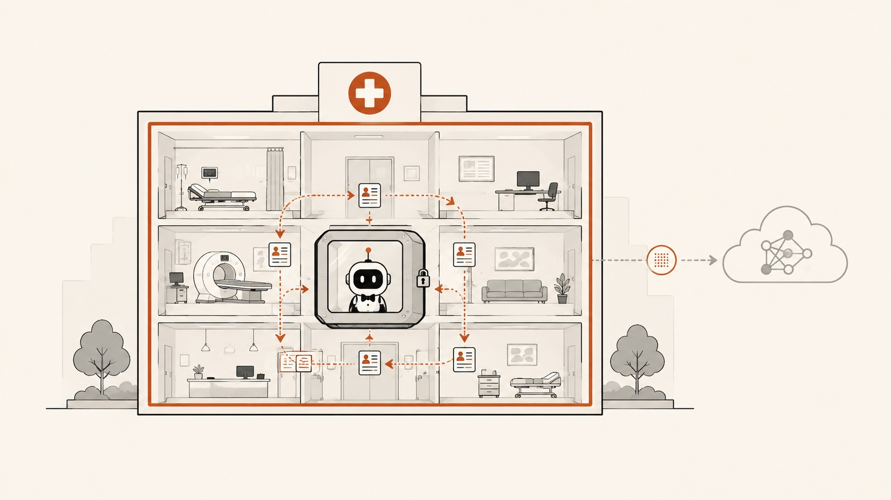

Chapter 04 · Domain Two
Healthcare: PHI That Never Leaves the Building
Healthcare has the same shape as finance with the stakes turned up and a named regulator. Protected Health Information can't be casually shipped to a third-party API, clinical actions carry liability, and buyers — hospitals, payers, clinics — are institutionally allergic to data leaving their walls. That allergy is not an obstacle to route around. It is the exact reason a harness you run on-prem, on your own keys, is the only credible shape for AI here.

A clean flat-vector editorial illustration on a warm off-white background: a cross-section of a hospital building with a small sealed container box inside it holding an agent icon; patient-record cards circulate strictly within the building's walls while a rust-orange boundary line marks the perimeter they never cross; a faint outbound arrow to a cloud model carries only an anonymized token, not records. Single rust accent (#b0451d) over ink and paper, calm and precise, generous whitespace, no text baked in. Target size ~1280×720px, 16:9 landscape; the art is letterboxed into a 16:9 box, so keep the hospital centred with safe margins.
Generate this with your image agent, then drop the file here.
The plays
Prior auth is a paperwork war fought over payer policy documents. A harness with a RAG extension over the payer's own coverage guidelines, plus a custom tool that reads the relevant slice of the chart, can draft the authorization request with the policy citation attached. It's high-frequency, rule-bound, and maddening by hand — the archetypal automation win. The clinician reviews and signs; the agent does the assembly.
Risk — it drafts and cites; a licensed human owns every clinical determination.
Discharge summaries, referral letters, coding support, care-gap lists — the un-glamorous ops layer where minutes-per-case at scale is real money. Run it headless in print/JSON mode over the queue; give it long-term memory so it carries a patient's context across encounters. RAG over your institution's own protocols keeps it on-formulary and on-policy.
Risk — memory of PHI is itself regulated data; govern its retention explicitly.
The same permission-gate pattern from finance, tuned to clinical stakes: the agent can read the chart and draft to a scratch space, but any write back to the EHR passes through an approval gate with a full audit record. Read-heavy, write-gated is the correct default posture for anything touching a patient record.
Risk — read access to PHI still needs minimum-necessary scoping and logging.
The one architecture that makes it legal to try
The move is simple to state: run the harness where the PHI already lives. Because Pi is a self-contained toolkit you install and drive with your own keys, you can deploy it inside the hospital's own environment — a container on their infrastructure (chapter 9's Gondolin / Docker / OpenShell patterns) — so records are read and processed in place. The only thing that crosses the boundary is the prompt to the model provider on the institution's own BYOK enterprise account, and even that you can minimize. "PHI never leaves the building" stops being a slogan and becomes an architecture diagram.
HIPAA-shaped reality: a BYOK, on-prem deployment is necessary but not sufficient. You still need Business Associate Agreements with your model provider, minimum-necessary access controls, retention governance on anything the memory extension stores, and clinical validation. Pi removes the data-egress objection; it does not remove the compliance program. Anyone selling "HIPAA-compliant AI in a weekend" is selling a liability.
Every hospital wants the productivity and fears the exposure. The reshapeable, on-prem, BYOK harness is the rare answer that honors both. Build the boring, high-frequency ops copilots first — prior auth, discharge summaries — where the ROI is legible and the clinical risk is contained by a human signature.
Sources Pi capabilities: RAG, long-term memory, permission gates, print/JSON mode, BYOK, containerized deployment (pi.dev/docs/latest; github.com/earendil-works/pi). Regulatory framing is illustrative, not legal advice.